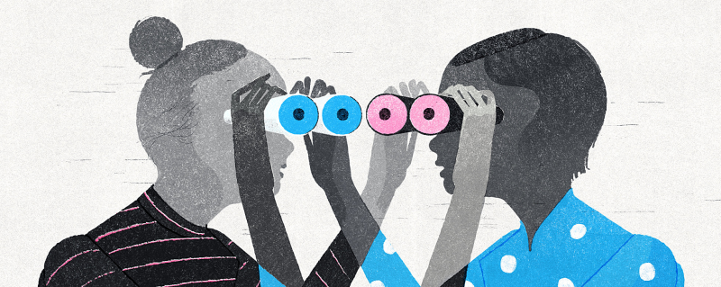

Miért olvassunk?
Az olvasásnak számos pozitív hatása van. Többek között fejleszti a mermóriát és az empátia készséget, bővíti a szókincset, segít az önkifejezésben és az önismeretben, illetve javítja a koncentrációt.
Az olvasásnak számos pozitív hatása van. Többek között fejleszti a mermóriát és az empátia készséget, bővíti a szókincset, segít az önkifejezésben és az önismeretben, illetve javítja a koncentrációt.
Leggyakoribb indokok: Időhiány, nem érdekes a könyv, nem köt le az olvasás, drágák a könyvek... Bármennyire is illik rád ezen állitások egyike (vagy akár az összes), a következő érvek mindenképp érdemes elolvasni.
„Egy olvasó ezernyi életet megél, mielőtt meghal. Az az ember, aki nem olvas, csak egyet.”
George R. R. Martin
Tanulmányok kimuttaták, hogy olvasással késleltethető, de akár meg is előzhető az demencia és az Alzheimer-kór. Az olvasással folyamatosan megmozgatjuk agyunk különböző részeit. (Hasonló képpen a társasok és a keresztrejtvények is.)
Mikor elméllyülünk egy jó könyvben, kiszakadunk a folyamatosan pörgő és ingerekkel túldúsított valóságból. Kilépünk a problémákból egy időre. A sztori segít nem a problémáidra koncetrálni, így pihenteti az agyad.
Egy történet olvasása közben, folyamatosan fel kell idéznünk a korábbi elemeit. Ez edzi a memóriánkat. Minél hosszabb egy könyv, annál többször kell majd visszaemlékezni az előzményekre, így erősítve és gyarapítva az agyi pályáinkat.
„Mai rohanó világunkban” elárasztanak minket az információk. Emiatt a figyelmünk megoszlik. Egyszerre fogyadjuk és dolgozzuk fel a mindenhonnan (többségében a képernyőről) érkező adatokat (reklámok, közösségi média, levelezések, hírek stb.). A sikeres multitasking-hoz jó koncentrációs készég kell. Az olvasás ebben a segítségünkre van. Amíg az adott történetre irányítjuk minden figyelmünket, edzük a koncentrációs képességünket is.
Bármi amit olvasol csak bővíti eddig szerzett ismereteidet. Tágítja a látóköröd és segít új szemszögbő. megvizsgálni eddigi tudásod. Minden új információ csak többé tesz.
A különböző könyvek különböző stílussal és szókészlettel rendelkeznek. Minél többet olvasol, annál több szóval és fogalmazási formával találkozol. Ezek mind segítik az íráskészséged és az önkifejezésed.
„Élni arany. Olvasni ezüst. Írni ötvözet”
Vámos Miklós
Egy történeten keresztül megérthejük a szereplők gondolkodási stílusát, érzéseit. Így kilépnünk a saját érzelmi körünkből és belelépünk egy akár teljesen másfélébe. Ezzel gyakoroljuk mások megértését és elfogadását.
Mindezek mellett az olvasás elősegíti a kreatív kibontakozást. Egy képzelt váliág vizualizálása és abba való belehelyezkedés, segíti a kreatív gondolkodást.